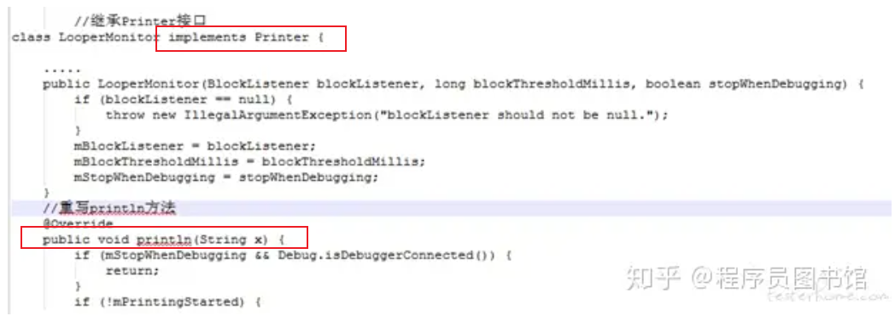
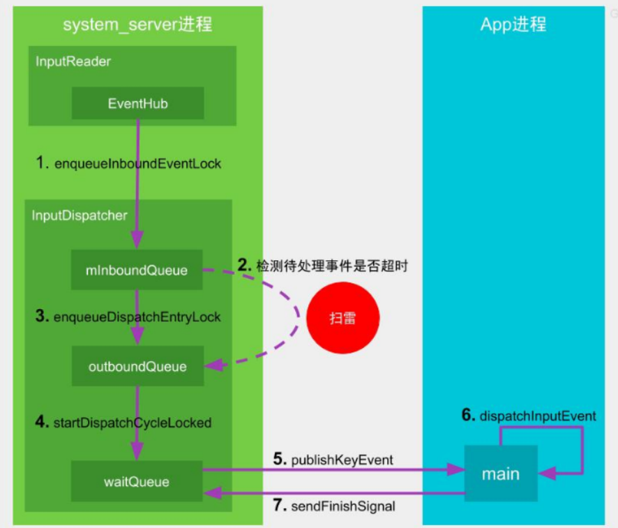

1. 目录
2. ANR
参考： ANR问题的产生机制.pdf
2.1. 监控方式一 ANR（安卓系统侧）
目的： ANR -------> Application Not responding -------> 响应：希望事情在一定的时间内完成
事情的特征： 有一定耗时的， 比如：
输入类ANR：
InputDispatching Timeout：输入事件分发超时5s，包括按键和触摸事件
组件类ANR:
- Service Timeout：前台服务在20s内未执行完成；
BroadcastQueue Timeout：前台广播在10s内未执行完成ContentProvider Timeout：内容提供者在publish过超时10s;
-------------> 都有一个特点： 不可见，却要给用户一个反应！
TODO:
ANR 与 阻塞是否等价呢？有什么区别与共同点？设计的模型
2.2. 监控方式二：应用自身监控-------WatchDog方式
前提：同进程
APP 同进程监控ANR --------> WatchDog方式 ：https://blog.csdn.net/qq_30379689/article/details/129056033
原理：
应用自己新建 WatchDog 线程 ------> 类似于 系统侧的watchDog
缺点：
2.3. del：监控方式三：应用自身监控-------log时间差
参考： https://zhuanlan.zhihu.com/p/119293585?utm_id=0
项目-------BlockCanary：
原理：
在主线程的Looper.loop中 dispatchMessage 前和后 ------> 监控时间差 注： 【1】日志安卓原生已经加了
----------> 从模型角度，本质：监控一次loop的时间
TODO: 画个图
因为【1】，自然，只需要继承 Printer 移花接木：
图片： 见 https://zhuanlan.zhihu.com/p/119293585?utm_id=0 //继承Printer接口 class LooperMonitox implements Printer
优点：
缺点很明显：
检测不到长久的block：
没有启动另一个线程，对于长期block的线程 -------> 没有一次完整的loop，检测不到第二次print ------> 不会有反应-------> 根本原因：自己的线程检查自己
2.4. del：监控方式四：应用自身监控-------FileObserver
原理：
检测系统侧ANR的结果
3. Input ANR
流程图：

见《ANR问题的产生机制.pdf》------------> TODO: 这不是一个好的图，因为方向和方位不对
功能主体：
InputDispatcher：
InputDispatcher分发的时候，记时间
APP进程分发完毕的时候，会直接知会给InputDispatcher 【1】
超时了，
执行工作自然交给AMS去处理，报错，弹窗
注【1】：
如何知会？
TODO:
https://juejin.cn/post/7010319858118164510#heading-27 常见实例 + 关键字眼
3.1. ANR爆炸现场的保存
system_server会马上去抓取现场的信息：
将am_anr信息输出到EventLog，也就是说ANR触发的时间点最接近的就是EventLog中输出的am_anr信息
收集以下重要进程的各个线程调用栈trace信息，保存在data/anr/traces.txt文件
当前发生ANR的进程，system_server进程以及所有persistent进程
audioserver, cameraserver, mediaserver, surfaceflinger等重要的native进程
CPU使用率排名前5的进程
将发生ANR的reason以及CPU使用情况信息输出到main log
将traces文件和CPU使用情况信息保存到dropbox，即data/system/dropbox目录
-----------------------> TODO: 看一下具体的log以及文件
https://www.jianshu.com/p/f624266c8424 Android 性能优化——ANR监控与解决
https://zhuanlan.zhihu.com/p/654699274 android程序中,产生ANR原因与分析解决
CPU usage from 0ms to xxx ms later with xx% awake: 14% 1673/system_server: 8% user + 6.7% kernel / faults: 12746 minor 13% 30829/tv.danmaku.bili: 7.3% user + 6.2% kernel / faults: 24286 minor 6.6% 31147/tv.danmaku.bili:ijkservice: 3.7% user + 2.8% kernel / faults: 11880 minor 6% 574/logd: 2.1% user + 3.8% kernel / faults: 64 minor .. TOTAL: 6.4% user + 8.2% kernel + 0% iowait + 0.6% irq + 0.1% softirq CPU usage from xxms to xxxms later 73% 1673/system_server: 49% user + 24% kernel / faults: 1695 minor 33% 2330/AnrConsumer: 12% user + 21% kernel 15% 1683/HeapTaskDaemon: 15% user + 0% kernel 9.2% 7013/Binder:1673_12: 6.1% user + 3% kernel 6.1% 1685/ReferenceQueueD: 6.1% user + 0% kernel 6.1% 2715/HwBinder:1673_5: 6.1% user + 0% kernel 3% 2529/PhotonicModulat: 0% user + 3% kernel 25% 30829/tv.danmaku.bili: 4.2% user + 21% kernel / faults: 423 minor 25% 31050/thread_ad: 4.2% user + 21% kernel ... ... 27% TOTAL: 10% user + 14% kernel + 0.3% iowait + 0.9% irq + 0.3% softirq
ANR对话框：
对用户可感知的进程则弹出ANR对话框告知用户，对用户不可感知的进程发生ANR则直接杀掉
3.1.1. TODO： dump数据位置
/proc/106/coredump_filter
包括调用栈
--------> 进程外？系统能力？？？？
3.2. Input ANR的本质模型
图：TODO： com
与watchDog的本质模型，并没有本质上的差异 ---------> 见watchDog
3.3. 补充 ANR
深入理解 Android ANR 触发原理以及信息收集过程 - huansky - 博客园 (cnblogs.com) https://www.cnblogs.com/huansky/p/14954020.html
ANR 触发原理 | Agehua (conorlee.top) https://conorlee.top/2022/08/08/anr-trigger-principle/
https://juejin.cn/post/6864555867023343623#heading-3 好文
https://github.com/qingmei2/blogs/blob/master/src/反思系列/反思|系列目录.md 好文 反思
https://blog.csdn.net/to_perfect/article/details/128509630
https://blog.csdn.net/rzleilei/article/details/127118071 -----------> 超级好文，尤其图画的好
失落夏天 的ANR系列文章：
总目录：https://blog.csdn.net/rzleilei/article/details/120720918
分为三块来讲：
第一块，讲解ANR发生后，是如何显示的，以及对应的日志文件如何生成的：
ANR系列之一：ANR显示和日志生成原理讲解_失落夏天的博客-CSDN博客 ------> 好文，尤其图
第二块，讲四种类型的ANR是如何产生的：
ANR系列之二：Input类型ANR产生原理讲解 ------> 好文，尤其图
ANR系列之三：broadcast类型ANR产生原理讲解
ANR系列之四：ContentProvider类型ANR产生原理讲解
ANR系列之五：Service类型ANR原理讲解
第三块，讲如何ANR问题如何进行分析，以及如何建立有效的机制来检测上报ANR类型问题。（未完成）
ANR系列之六：ANR文件和日志如何分析
ANR系列之七：如何建立有效的机制来监控分析ANR问题
4. 面试题 Q&A
4.1. ANR 的原因有哪些？
- 耗时的网络访问
- 大量的数据读写
- 数据库操作
- 硬件操作（比如 Camera）
- 调用 thread 的 join()方法、sleep()方法、wait()方法或者等待线程锁的时候
- service binder 的数量达到上限 ---------> 注意！！！！！！
- system server 中发生 WatchDog ANR
- service 忙导致超时无响应
- 其他线程持有锁，导致主线程等待超时 ---------> 注意！！！！！！
- 其它线程终止或崩溃导致主线程一直等待 ---------> 注意！！！！！！其他线程阻塞呢？
------------------------> TODO: 化简！！！！！！
1、阻塞型： 其他线程持有锁，导致主线程等待超时
其他线程阻塞/终止或崩溃导致主线程一直等待
service binder 的数量达到上限 ！！！
2、忙碌型： I/O、网络
链接：https://www.jianshu.com/p/e47fcc8c1df6